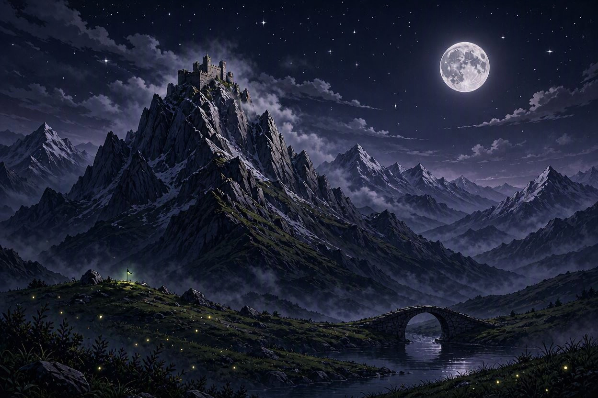

Chapter V - The Whispering Ledge

The hidden trail is barely a goat path — a narrow ledge winding along the cliff face, concealed by overhanging rock and perpetual mist. One misstep means death.
You move slowly, deliberately. Three points of contact always. The wind howls, tearing at your cloak. Far below, the clouds hide the valley floor. Above, the fortress looms closer with each agonizing meter.
Halfway across, you find a crystal embedded in the rock — pulsing purple, warm. A warding stone from the old times. You pry it free. The air grows... lighter.
The trail ends at a forgotten postern gate — a small service door in the fortress's eastern wall, half-swallowed by stone. The lock is rusted but functional.
You slip inside, unseen, unheard. The fortress's guts await.
Where do you go inside the fortress?